Anomalophobia (n.)
From the Greek 'anomalos' meaning irregular or abnormal, and 'phobia' meaning fear.
A psychological discomfort or aversion to objects, images, or situations that markedly deviate from what is
typical, expected, or considered normal, especially when such deviations are extreme or exaggerated without a
clear purpose or function.
Characterized by an emotional response that may include feelings of unease, disgust, or anxiety,
particularly when confronted with altered representations of familiar objects that have been rendered
dysfunctional, overly complex, or absurd. The reaction can be triggered by various stimuli, such as:
- Digital alterations,
- Surreal art,
- Physical objects that challenge conventional aesthetics, functionality, or the laws of physics.
This phobia may encompass, but is not limited to, responses similar to those observed in trypophobia, where
clusters of objects or patterns evoke aversion. However, in anomalophobia, the trigger is the anomaly in the
object's form or function rather than repetitive patterns.
The intensity of the response can range from mild discomfort to severe aversion. The phobia may
be experienced in isolation or as part of a broader spectrum of sensory sensitivities or aesthetic preferences.
Note that it is not widely recognized in clinical settings.
Examples
Photo of a tree where a large number of leaves appear to be growing directly out of the trunk (Personal
Rating: 2/10)
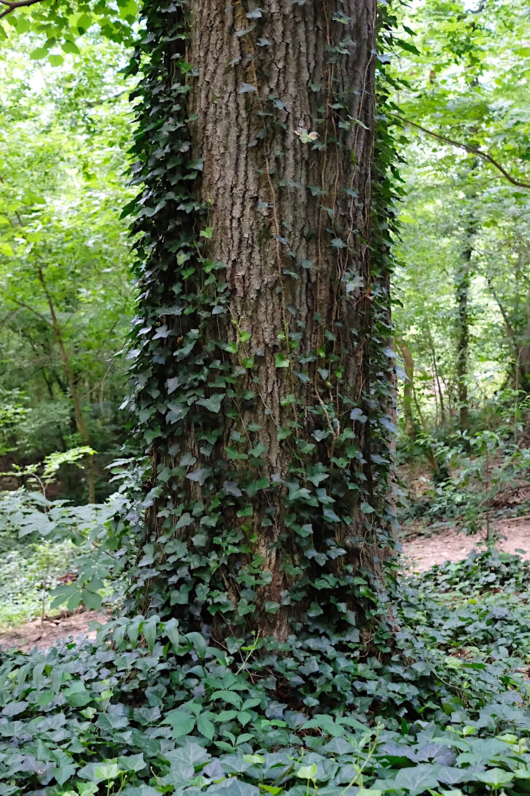
Source
Complex molecular structure with densely clustered atoms in three seperate arms that stretch and bend
unnaturally (Personal Rating: 6/10)
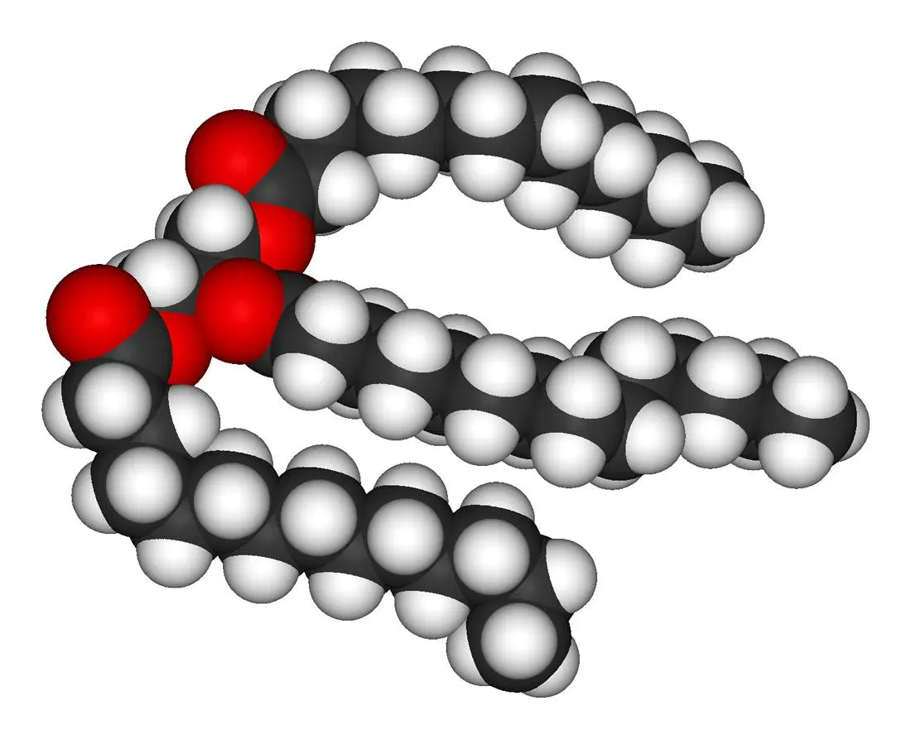
Source
(Example of someone expressing the feeling of anomalophobia. Notice over 200 likes, while many of the
comments are either neutral or humorous)
Heavily modified Nintendo 64 controller with an excessive number of buttons, screens, and joysticks in
a chaotic, impractical arrangement (Personal Rating: 6/10)
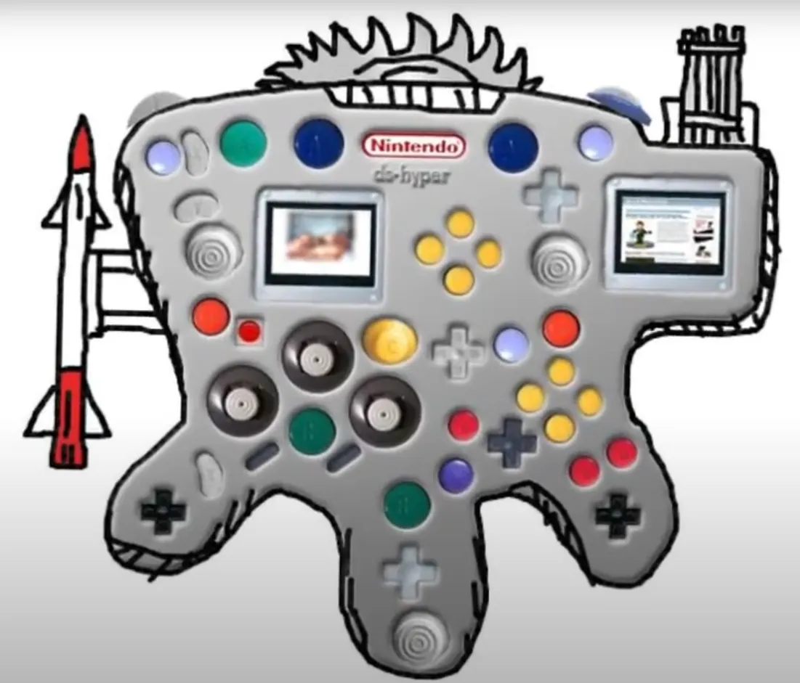
Source
(Notice how not a single out of 100 comments mentions the image)
Heavily modified Playstation 3 controller with an excessive number of shoulder buttons and joysticks,
similar to the N64 one, but with more image distortion (Personal Rating: 10/10)
Source
(Even this tweet got mixed responses)
Real life photo of a heavily modified Playstation 4 controller with a slightly less excessive number of
shoulder buttons and joysticks (Personal Rating: 8/10)
Source
Large mutated creeper with a long, curved neck and four long and stretched legs (Personal Rating: 9/10)
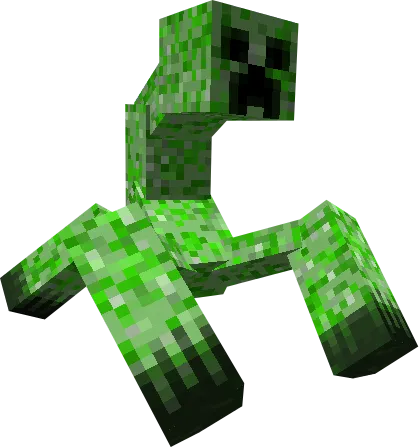
Minecraft showcase of someone "mining a pig" as if they were a regular Minecraft blocks (Personal
Rating: 6/10)
The same video also contains a scene where the player eats a diamond, which I would rate about the same.
His entire channel is actually filled with this kind of Minecraft content.
3D model of a Minecraft creeper with the pig texture applied to it (Personal Rating: 6/10)
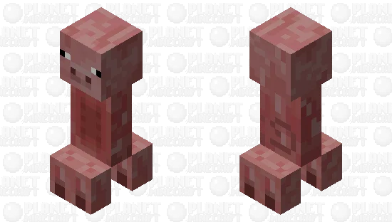
Photo of a keyboard where lots of visible air bubbles have formed beneath the paint (Personal Rating:
4/10)
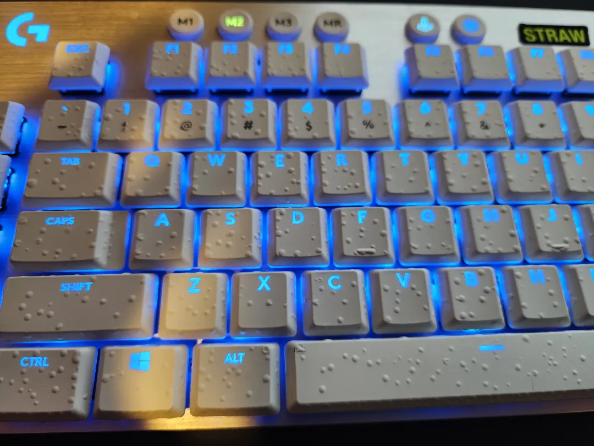
Picture of a shower faucet with 9 seperate shower heads (Personal Rating: 3/10)
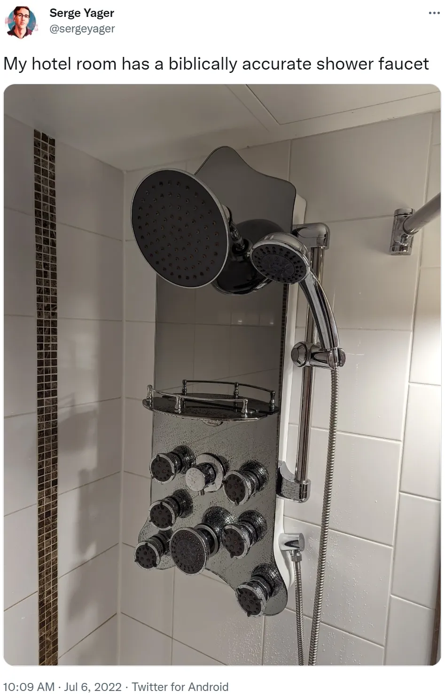
Photo of a pineapple with multiple pertrusions sticking out of from it and other anomalies (Personal
Rating: 8/10)
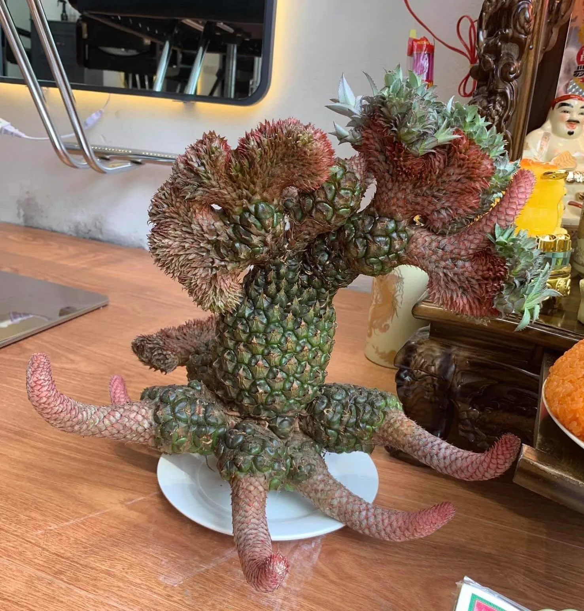
Meme that shows the number of cameras on an iPhone increasing with higher models, until the entire
phone is covered (Personal Rating: 5/10)
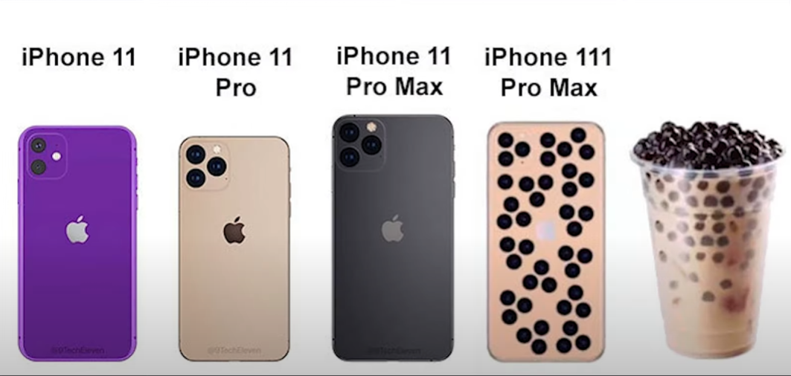
Original source is a Fireship video I was unable to find
AI-generated image of a TV-remote that is completely covered in lots of buttons with sizes that range
from normal to tiny (Personal Rating: 6/10)
AI-generated image of a pasta dish with a massive pile of peas on top that appears to defy gravity, as
if they were glued together (Personal Rating: 5/10)
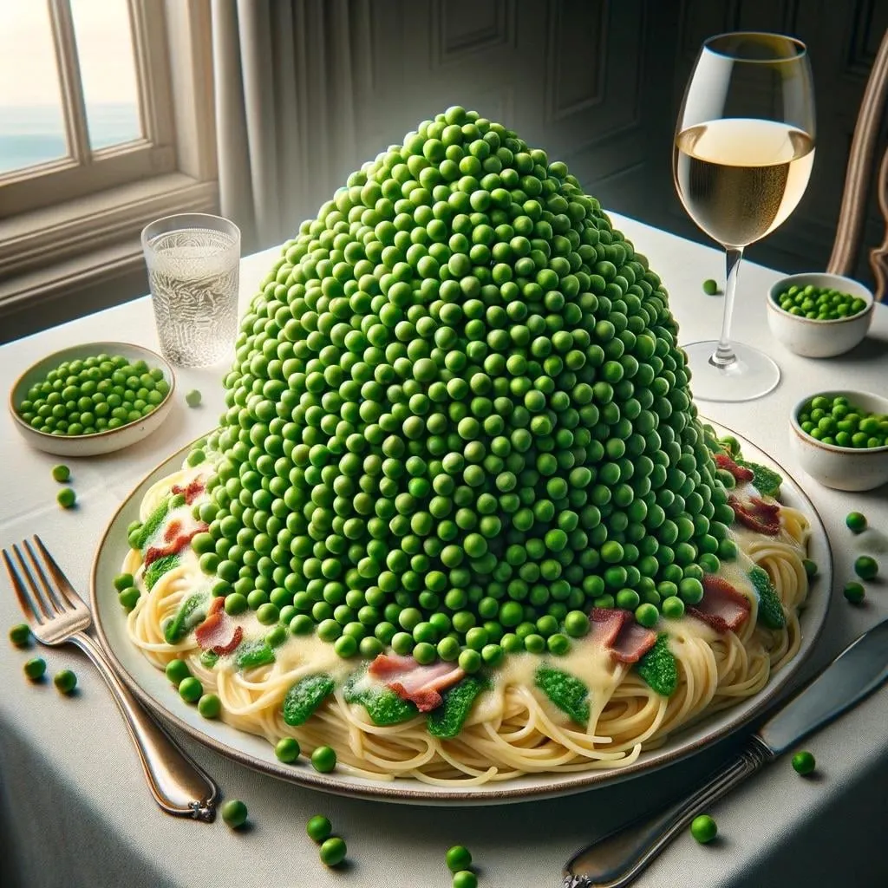
AI-generated image of a huge cookie cake standing on a base of other cakes, and a massive pile of
various sweets on top of it, similar to the previous image (Personal Rating: 6/10)
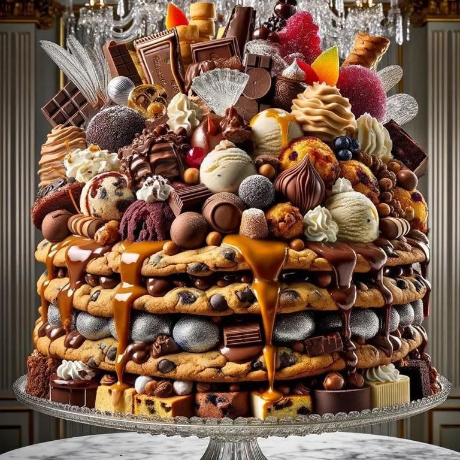